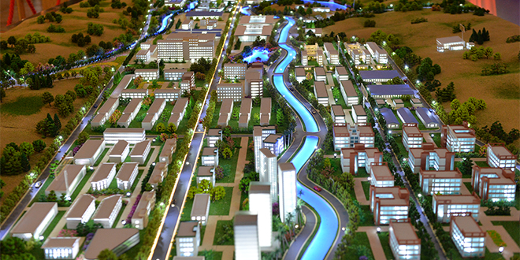
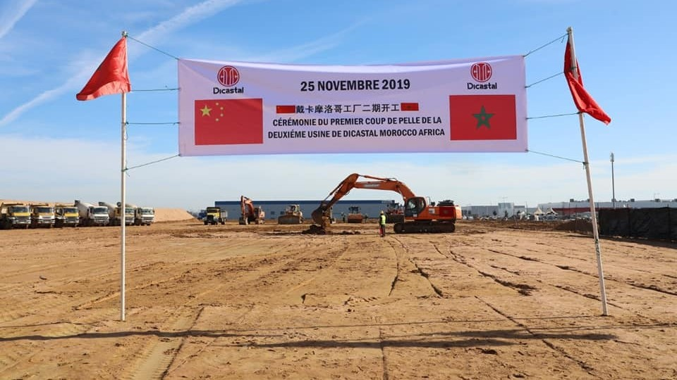

Le Maroc peut être considéré comme un bon exemple de la manière dont les entreprises technologiques chinoises telles que Huawei peuvent promouvoir un partenariat commercial basé sur une stratégie gagnant-gagnant. L’implication du géant chinois au Maroc représente une nouvelle dynamique quant à la manière dont les affaires se déroulent sur le marché africain. De ce fait, le leader mondial des TIC grappille des parts de marché au Maroc en capitalisant sur son image d’entreprise innovante. Un centre de formation et de certification a été créé à cet effet à Rabat, en 2012, dans le but de transférer le savoir-faire en matière de nouvelles technologies de l’information et de la communication aux opérateurs locaux et d’aider les entreprises et les industries locales à se développer. C’est aussi une façon de jouer sur l’image d’un smart power commercial qui n’exclut pas le recours à un impact sur la société.
Deux ans après, Huawei Maroc a organisé le Forum GENI 2014 destiné aux universités spécialisées dans les technologies de l’information et des télécommunications, suivi par le projet GSM-R exploité par l’ONCF qui illustre bien la manière dont les technologies de la firme chinoise peuvent bien servir le réseau ferroviaire marocain. En 2018, Huawei investit à nouveau dans l’Université marocaine et lance le programme «Seeds for the Future 2018» qui consiste à sélectionner une délégation parmi l’élite des étudiants pour un voyage de formation de deux semaines en Chine. Les étudiants passent une semaine à Pékin, à l’université Géoscience pour une immersion et découverte de la riche culture chinoise, puis ils partent à la ville de Shenzhen où se trouve le siège de Huawei Group pour une formation avancée sur les technologies de pointes telles que la 5G, LTE, et le Cloud computing.
Finalement, avec pas moins de 119% de croissance, le fabricant chinois a réussi à vendre en 2018 au Maroc, plus du double des smartphones commercialisés en 2017.
Le groupe chinois Haite ne sera plus aux commandes des chantiers de la Cité Mohammed VI Tanger Tech.Désormais, et à partir de ce 26 avril, un autre groupe chinois prendra les commandes, apprend Le360 de sources autorisées.Il s’agit de la "China Constuction Communication Company" (CCCC).
Une nouvelle étape a été franchie dans l’ambitieux projet de la Cité Mohammed VI Tanger Tech, avec la tenue, mardi 3 novembre 2020, d’une cérémonie virtuelle de signature des accords de partenariat avec China communications construction company (CCCC)/China road and bridge corporation (CRBC), reliant CCCC/CRBC à Pékin, la Région Tanger-Tétouan-Al Hoceima et l’Agence Spéciale Tanger Méditerranée (TMSA) à Tanger, ainsi que Bank Of Africa (BMCE) à Casablanca.
A travers ces Accords, CCCC/CRBC formalise son entrée dans le capital de la Société d’aménagement de Tanger Tech (SATT), à hauteur de 35%, aux côtés de BMCE Bank, la Région Tanger-Tétouan-Al Hoceima et TMSA, consolidant ainsi le tour de table de la SATT, fait savoir un communiqué du Groupe Bank Of Africa
« Une nouvelle étape est franchie dans la coopération sino-marocaine marquant le démarrage effectif du projet de la Cité Mohammed VI Tanger Tech, une cité industrielle moderne, futuriste, écologique, connectée aux technologies nouvelles et symbole d’une Afrique ouverte sur le monde entier, conformément à la vision de Sa Majesté le Roi Mohammed VI », relève le communiqué.
Le protocole d’investissement et le pacte d’actionnaires ont été signés d’un côté par CCCC et CRBC, représentés respectivement par leurs Vice-présidents M. Liang Qingshan et M. Sun Yaoguo, et de l’autre côté par BMCE Bank, représentée par son Président directeur général M. Othman Benjelloun, TMSA représenté par son Président M. Fouad Brini et la Région Tanger-Tétouan-Al Hoceima, représentée par sa Présidente Mme Fatima El Hassani, selon la même source.
Lors de cette cérémonie de signature, la société AEOLON, l’un des premiers fabricants mondiaux de pales éoliennes, a d’ores et déjà annoncé son intention de s’installer dans la Cité Mohammed VI Tanger Tech avec un investissement de 140 Millions US Dollars et la création de plus de 2000 emplois, a fait savoir le communiqué.
Et d’ajouter que le Groupe China communications construction company (CCCC) est classée dans le Top 5 des entreprises publiques chinoises d’ingénierie et de développement, et sa filiale China road and bridge corporation (CRBC) est spécialisé dans les grands projets d’infrastructure en Chine et à l’international.
Le groupe chinois Citic Dicastal, leader mondial spécialisé dans le moulage d’aluminium et dans la production de pièces automobiles en aluminium, renforce sa présence dans le Royaume. L’industriel a en effet inauguré à Kénitra le 25 novembre 2019 la deuxième phase de son projet Dicastal Morocco Africa, pour un investissement global de 350 millions d’euros. Dans le détail, il s’agit d’une unité de production qui s’étend sur une superficie de 30.000 m2, et qui permettra notamment la création de quelque 1200 emplois.
L’usine, selon le top management, sera dotée d’une technologie avancée au niveau de la section peinture, afin de permettre au groupe de proposer des produits Premiums, et aussi une gamme de jantes plus grandes. Force est de rappeler que Dicastal fournit la majorité des constructeurs automobiles (Volkswagen, BMW, Renault-Nissan, Fiat, Chrysler Automotive, Peugeot, GM, Toyota…).
« Ce projet positionne le Maroc dans une industrie de haute technologie », a souligné Moulay Hafid Elalamy, ministre de l’Industrie. « Cette deuxième usine est l’exemple de la coopération fructueuse maroco-chinoise dans le domaine industriel et s’inscrit dans le cadre de la mise en œuvre de l’initiative du gouvernement chinois One Road, One Belt et du plan d’accélération industrielle initié par le Maroc pour la relance de son industrie nationale », a-t-il poursuivi. Le top management du groupe industriel a fait remarquer que la première phase du projet, inaugurée en juin 2019, tourne actuellement à pleine capacité pour livrer ses clients au Maroc, aux Etats-Unis et en Europe.

Huawei, officiellement Huawei Technologies Co. Ltd., est une entreprise fondée en 1987, dont le siège social se trouve à Shenzhen en Chine et qui fournit des solutions dans le secteur des technologies de l'information et de la communication.
Lire plus.L’Office national des chemins de fer est un établissement public marocain chargé de l'exploitation du réseau ferroviaire du pays sous forme d'une entreprise publique à caractère commercial et industriel avec ...
Lire plus.
Créer en 6 décembre 2006, China Communications Construction Company est une entreprise de construction publique chinoise. Elle a notamment comme filiale Shanghai Zhenhua Heavy Industries.
Lire plus.CITIC Group 中国中信集团公司, connue comme China International Trust and Investment Corporation, est une entreprise publique de fonds d'investissement de la République populaire de Chine, établie par Rong Yiren (榮毅仁) en 1979 avec l'approbation de Deng Xiaoping. La société a été rebaptisé en 2000 le CITIC Group.
Lire plus.En vous inscrivant à cette newsletter, vous recevrez quotidiennement des informations et des actualités sur le Maroc et la Chine. vous ne regretterez jamais cette expérience.
envoyez-nous un message et abonnez-vous à notre newsletter!
© 2021 MarocChine project